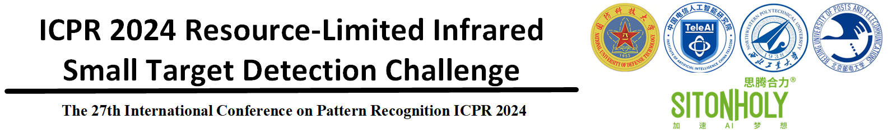

News
2024-04-18：Basic information release.
2024-04-26：Award for Each Track information update.
2024-05-02：Dataset for Track 1 is released in Baidu Drive and OneDrive.
2024-05-02：Dataset for Track 2 is released in Baidu Drive and OneDrive.
2024-05-27：Baseline Model update.
2024-06-22：The test server online for Track 1 and Track 2 release.
Schedule
| Time | Target |
|---|---|
| May 1, 2024 | Release of training data, validation data |
| June 21, 2024 | Registration deadline |
| June 22, 2024 | Testing server online |
| July 11, 2024 | Test result submission deadline |
| July 11, 2024 | Fact sheet / code / model submission deadline |
| July 21, 2024 | Competition Report submission deadline |
| August 1, 2024 | Test preliminary score release to the participants |
| August 23, 2024 | Challenge paper submission |
| September 2, 2024 | Camera-ready papers due |
| December 1, 2024 | Workshop day |
Introduction
In recent years, with the development of deep learning technology, infrared small target detection has made rapid progress in various military and civilian fields, such as marine resource utilization, high-precision navigation, autonomous driving, and ecological environment monitoring. However, with the increasing demands for edge-side applications such as micro-satellites, micro-UAVs, autonomous vehicles and ships, existing infrared small target detection networks struggle to achieve efficient response in edge-side scenarios with limited annotated samples and computational resources. These limitations hinder their practical value in commercial and engineering applications.
To address the aforementioned problems, we decide to organize a resource-limited infrared small target detection challenge. We aim to collaborate with peer institutions to further promote infrared small target detection in edge-side scenarios.
Description of ICPR 2024 LimitIRSTD
ICPR 2024 Resource-Limited Infrared Small Target Detection Challenge (LimitIRSTD) aims to facilitate the development of infrared small object detection algorithms under limited resources (e.g., less annotation, and low computational cost). This challenge is expected to include the following two competition tracks.
The goal of this task is to achieve weakly supervised infrared small target detection under single coarse point supervision (i.e., GT point is located around the centroid of the GT mask under Gaussian distribution). We will provide the training set with 6000 images and corresponding single point annotations. Test set with 500 frames is unavailable to the participants, and the participants will submit the models for performance evaluation.
The goal of this task is to achieve lightweight and efficient infrared small target detection under pixel level supervision (i.e., the model achieves better detection performance with fewer parameters, less computation and less memory usage). We will provide the training set with 9000 images and corresponding ground truth mask annotations. Test set with 2000 images is unavailable to the participants, and the participants will submit the models for performance evaluation.
Award for Each Track
| Awards | Numbers | Award Content |
|---|---|---|
| First Prize | 1 Team | 6000 RMB, Certificate |
| Second Prize | 2 Teams | 3000 RMB, Certificate |
| Third Prize | 3 Teams | 1000 RMB, Certificate |
| Recognition Award | 5 Teams | Certificate |
The organization committee of the ICPR2024 Conference will issue award certificates to 1st to 3rd prizes of each track. Teams that win the prize will be invited to submit their co-written papers to the ICPR2024 Challenge for peer review. If the paper is to be accepted and published, the participating team must specify the solution and ensure the repeatability of the competition results. Co-written paper is optional and does not affect the competitor's participation in the challenge or award.